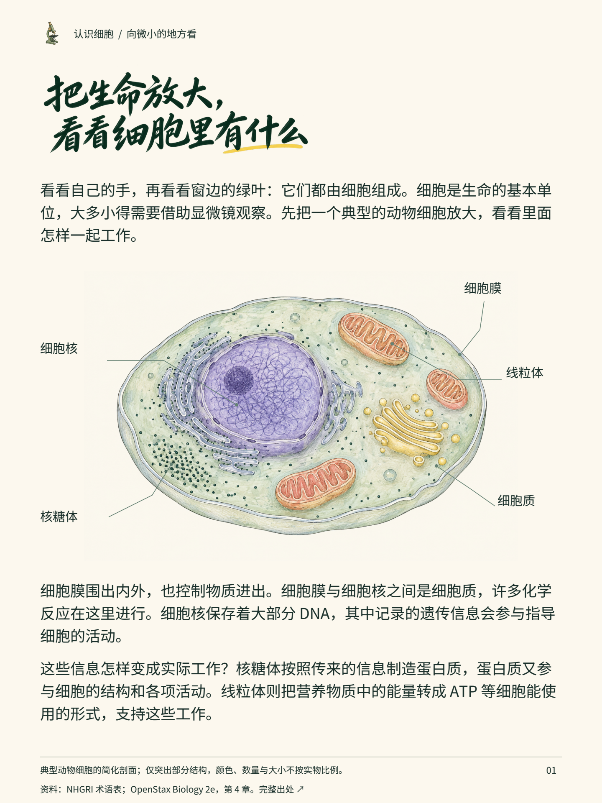
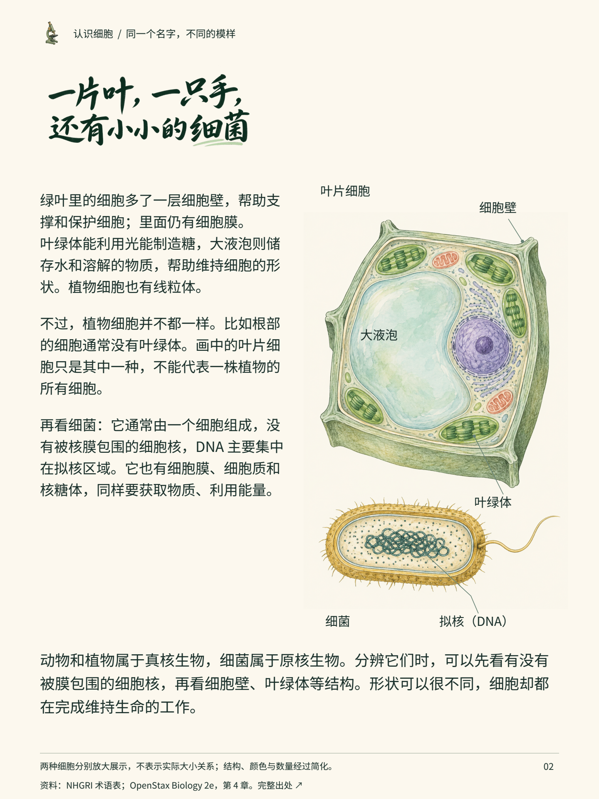

认识细胞：生命从这里开始
同一份两页案例的文字阅读版，适合手机与辅助阅读工具。插画细节可展开每页成稿查看。
把生命放大，
看看细胞里有什么
看看自己的手，再看看窗边的绿叶：它们都由细胞组成。细胞是生命的基本单位，大多小得需要借助显微镜观察。先把一个典型的动物细胞放大，看看里面怎样一起工作。
细胞膜围出内外，也控制物质进出。细胞膜与细胞核之间是细胞质，许多化学反应在这里进行。细胞核保存着大部分 DNA，其中记录的遗传信息会参与指导细胞的活动。
这些信息怎样变成实际工作？核糖体按照传来的信息制造蛋白质，蛋白质又参与细胞的结构和各项活动。线粒体则把营养物质中的能量转成 ATP 等细胞能使用的形式，支持这些工作。
画面索引：细胞膜；细胞质；细胞核；核糖体；线粒体。
查看第1页图文成稿

本页内容已在上方以可选择文字完整呈现。典型动物细胞的简化剖面；仅突出部分结构，颜色、数量与大小不按实物比例。一片叶，一只手，
还有小小的细菌
绿叶里的细胞多了一层细胞壁，帮助支撑和保护细胞；里面仍有细胞膜。叶绿体能利用光能制造糖，大液泡则储存水和溶解的物质，帮助维持细胞的形状。植物细胞也有线粒体。
不过，植物细胞并不都一样。比如根部的细胞通常没有叶绿体。画中的叶片细胞只是其中一种，不能代表一株植物的所有细胞。
再看细菌：它通常由一个细胞组成，没有被核膜包围的细胞核，DNA 主要集中在拟核区域。它也有细胞膜、细胞质和核糖体，同样要获取物质、利用能量。
动物和植物属于真核生物，细菌属于原核生物。分辨它们时，可以先看有没有被膜包围的细胞核，再看细胞壁、叶绿体等结构。形状可以很不同，细胞却都在完成维持生命的工作。
画面索引：叶片细胞；细胞壁；叶绿体；大液泡；细菌；拟核（DNA）。
查看第2页图文成稿

本页内容已在上方以可选择文字完整呈现。两种细胞分别放大展示，不表示实际大小关系；结构、颜色与数量经过简化。